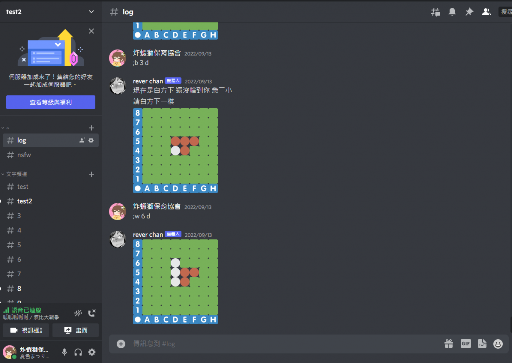
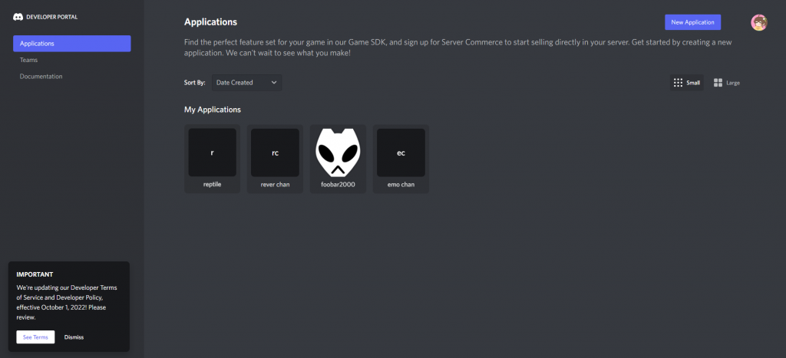
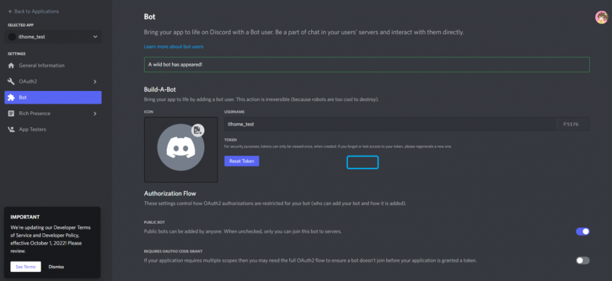
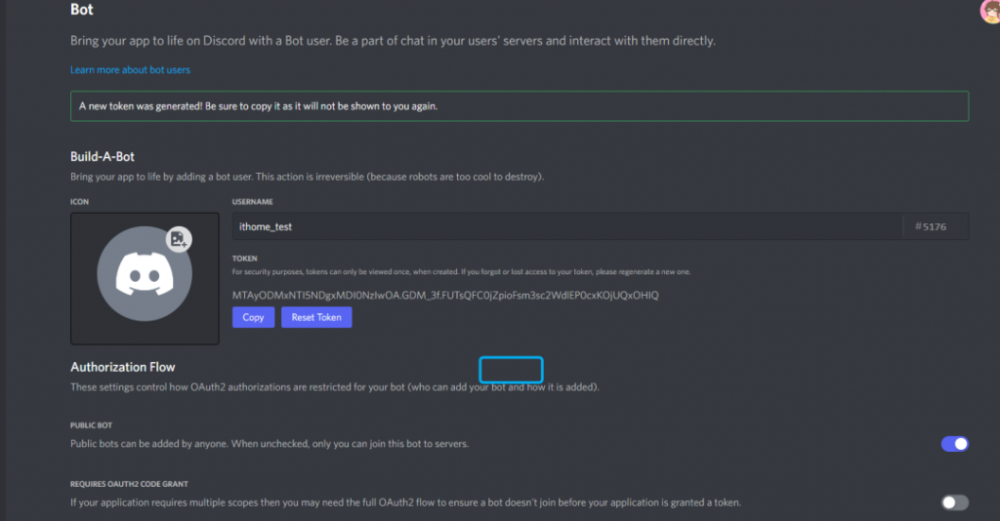

Discord是一個方便的通訊軟體，而他比起一般通訊軟體的優勢就是便利的語音以及多功能的群組(內稱伺服器)，甚至伺服器內部還可以再分為多個子頻道，提供主題分類，也可以加入自訂的機器人，增添更多的變化。

大概就像這樣，其中左上角的test2就是整個伺服器(guild、server)的名稱，左邊那排則是這個伺服器所有的文字頻道和語音頻道(channel)，中間則是文字訊息內容，而rever chan則是我自己加進來的機器人。那麼，在新增機器人之前，我們必須要先取得創建機器人專案，並取得他的token。首先，我們先進入dc developer的網頁，並登入dc帳號後，點選右上角的new application。

取名並創建完成後，進到該application並且選擇左邊的bot項目，接著點選add bot，新增一個新的機器人。

在dc bot的編寫中，我們是撰寫dc bot的主要內容，而後在程式中填寫要啟用的bot的token，就可以為持有該token的bot加載程式內容，而適用範圍為所有有把該bot拉為成員的server，意即只要伺服器有把bot拉進去，那個server裡的bot就會加載此程式內容。

那麼我們這邊就要點選reset token，取得bot的新token。這邊要注意的是，bot的token絕對不行外流，否則容易被有心人士利用加載其他程式內容，可能你隔半小時回來就發現你的伺服器已經被自己的bot洗版各種釣魚連結了。